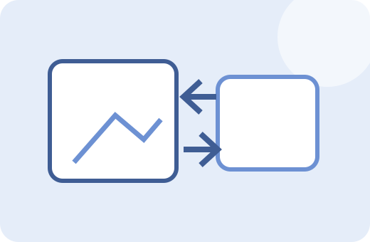

FACTORY ONE · IMAGE TOOL
이미지 용량 줄이기
원본 이미지와 압축 결과를 나란히 비교하고 JPG 품질을 조절해 파일 용량을 줄입니다. 저장 전 예상 감소율까지 확인할 수 있습니다.
원본·결과 비교품질 조절감소율 표시

원본
이미지를 선택하세요.
압축 결과
결과 미리보기
이미지 선택
사용방법
- 압축할 이미지를 선택합니다.
- 원본 해상도와 용량을 확인합니다.
- 품질 슬라이더를 움직이며 결과를 미리봅니다.
- 화질과 용량이 적절하면 저장합니다.
처리 기준과 주의사항
브라우저 캔버스에 이미지를 그린 뒤 지정 품질의 JPG로 다시 인코딩합니다. 투명 PNG는 JPG 변환 시 투명 배경이 유지되지 않을 수 있습니다.
중요한 원본 파일은 별도로 보관하고, 결과 파일은 저장 후 한 번 열어 내용과 품질을 확인하는 것을 권장합니다.
실제 사용 예시
4MB 스마트폰 사진을 블로그 업로드용으로 줄이면서 75% 품질 결과의 KB 용량과 육안 품질을 동시에 비교할 수 있습니다.
자주 묻는 질문
PNG도 JPG로 저장되나요?
현재 압축 도구의 저장 형식은 JPG 중심입니다.
원본 해상도도 줄어드나요?
현재 압축은 품질 중심이며 크기 변경은 별도 이미지 크기 변경 도구를 사용하세요.